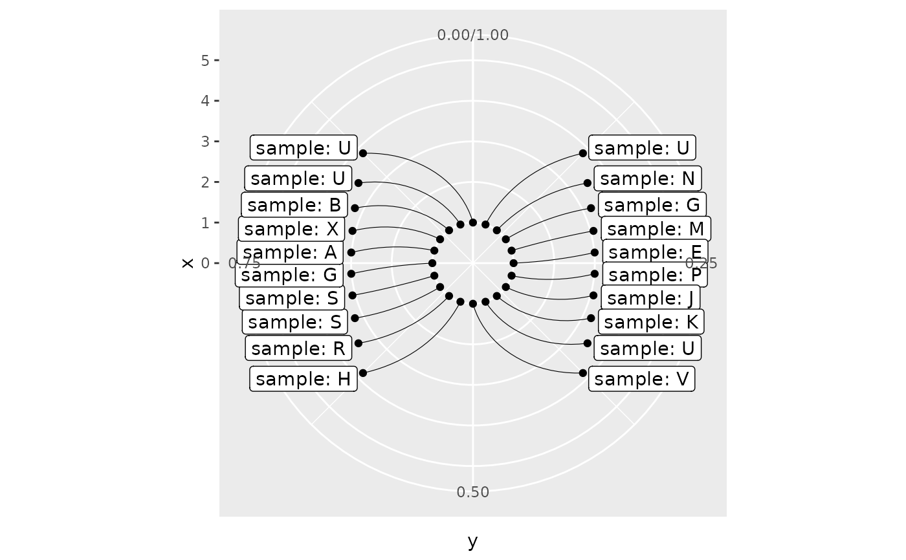

The set of layout functions is designed to effectively display text and labels
Source:R/layouts.R
layouts.RdThe layout functions help to streamline displaying text and labels geoms without overlapping effectively leveraging space available for pie and donut charts
tv()- The function builds layout resembled an old-fashioned TV screenpetal()- The function builds layout resembled flower with petalscircle()- The function builds circle layouteye()- The function builds two-sided layout
Usage
tv(
scale_x = 1.5,
scale_y = 1.5,
bend_x = 1,
bend_y = 1,
thinner = FALSE,
thinner_gap = 0.1
)
petal(
rotate = 0,
n = 4,
scale = 2.5,
bend = 0.3,
thinner = FALSE,
thinner_gap = 0.1
)
circle(r = 2.5, thinner = FALSE, thinner_gap = 0.1)
eye(scale_x = 2, bend_x = 1, alpha = 90, clove = 0.5)Arguments
- scale_x
Scales the layout in horizontal perspective
- scale_y
Scales the layout in vertical perspective
- bend_x
Adjusts the bend level in horizontal perspective
- bend_y
Adjusts the bend level in vertical perspective
- thinner
Distributes text or label elements across two different levels
- thinner_gap
Sets the spacing between thinner levels
- rotate
Rotates the layout clockwise
- n
Sets the number of petals in the layout
- scale
Scales the layout
- bend
Manages the bending level
- r
Sets the radius of the layout circle
- alpha
Defines the angle of distribution in horizontal perspective. Pick up value from degree interval (0, 180)
- clove
Determines the distribution proportion between the left and right-hand parts. Default value is 0.5. There ahould be numeric value from interval (0, 1) e.g. 0.4 denotes 40% cases on the right hand and 60% cases on the left hand
Value
Layout functions return layout function i.e. a function that takes a vector of angles and returns a numeric radius vector giving a position for each input value.
Layout functions are designed to be used with the layout argument of donutsk functions.
See also
Utilized in the following functions: geom_label_ext, geom_text_ext, geom_pin
Examples
# Render multiple layouts simultaneously
list(petal_2n = petal(n = 2),
petal_3n = petal(n = 3, rotate = 180),
petal_4n = petal(n = 4),
tv_base = tv(),
tv_ext = tv(bend_x = 0, bend_y = 0, thinner = TRUE)) |>
lapply(function(x){
rlang::exec(x, 1:300/300) |>
dplyr::tibble(r = _) |>
dplyr::mutate(theta = 1:300/300)
}) |>
dplyr::bind_rows(.id = "layouts") |>
ggplot(aes(x=r, y=theta, col = layouts)) +
geom_point(alpha = .3) +
coord_polar(theta = "y") +
xlim(0, 3.5)
# The eye() layout generates table as an output
n <- 20
theta <- 1:n/n
dplyr::tibble(
theta = theta,
lbl = paste0("sample: ", sample(LETTERS, n, TRUE))
) |>
dplyr::bind_cols(lt = eye()(theta)) |>
ggplot(aes(x=x, y=y)) +
geom_point(aes(x=1, y=theta)) +
geom_point() +
geom_segment(aes(x=1, xend=x, y=theta, yend=y), linewidth=.2) +
geom_label(aes(label=lbl, hjust=dplyr::if_else(theta > 0.5, 1, 0)),
nudge_x =.2) +
coord_polar(theta = "y") +
xlim(0, 5) +
ylim(0, 1)
